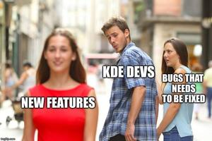

Maintainers View
So I want to document some of the views i have when maintaining NewPipe.
Keep it Streamlined
NewPipe is a Player for online videos on a smart phone, by means it is used for entertainment reason. This means it does not have to be some professional application, and it does not have to be complicated to be used. However NewPipe might not focus on the casual user completely as there are many features that are a bit more "tecki" and may require some knowledge about technology, however all in all NewPipe should be easy to use, even for not teck guys.
- NewPipe does not have to be a air plane cockpit: Don't add to much special features. If people want to do professionally things with Videos they might use professional tools.
- Design the UI so it does make sense to the user. Try to make it comply with material design guidelines.
- Don't add to much features: Think about the Betamax vs. VHS phenomena or the unix principle of having one program designed for one specific task: If you add to much functionality you add complexity and this is not appealing to the user. Focus on what NewPipe should be, and make it be only that.
Bugfixes
]
Disclaimer: This is a meme maybe in real live it is different. Pleas no shit storm.
Always go for Bugfixes, as the best application with the bes features does not help much if it is broken, or annoying to use. Now if a program is in an early stage it is quite understandable that many things brake. This is one reason why NewPipe still has no 1 in the beginning of its version number. However by now NewPipe is in a stage where there should be a strong focus on stability.
- If there are multiple Pull requests open, check the ones with the bugfixes first.
- Do not add to much features every version, as every feature will inevitable introduce more bugs. It is quite ok, if PRs stay open for a while (not to long though).
- If there are bugs that are stale, or open for a while bump them from time to time, so devs know that there is still something left to fix.
- Never accept bugs. From my perception the community does not like to fix bugs, this is why you as a maintainer should especially focus on perusing bugs.
Features
Well Features are also something that can cause headteachers. You should always see adding features critical and question weather that features does make sense, is useful and would actually be an advantage for the app. You should not blindly say yes to features even if they are small, however you should also not directly say no as well. Think about it, may be even for days before deciding weather you wan to accept a feature or not. If you are not sure, try it, look into the code, speak with the developer, and then make a decision and justify it. The criteria weather to add a feature or not should be:
- Is the features just requested by one or two people or was the feature requested by multiple people?
- Is the code of the feature written well?
- Is it a quick and hacky solution and could a proper solution be implemented later on?
- Does the amount of code justify the outcome?
Maybe people will send a pull request that will add a frequently requested feature, but is implemented in a hacky way, than don't add it, as you might get into trouble with that solution later on. Either through proplems of extending the feature, by introducing to much bugs or simply by braking the architecture or the philosophy of NewPipe. If so don't add it.
PRs
If a PR contains one or more features/bugs be curious. The more stuff a PR changes the longer it will take to be added. Also there might be things you are ok with, but then there are other parts that are not ok with and because of these you can't merge it. This is why you should insist to make the dev chop down the PR into multiple smaller PRs if its possible.
Comunity
When you talk to the community stay friendly and respectful, and make sure a friendly and respectful tone will stay. When you have a bad day just don't go to github (an advice from my experience ;D ).